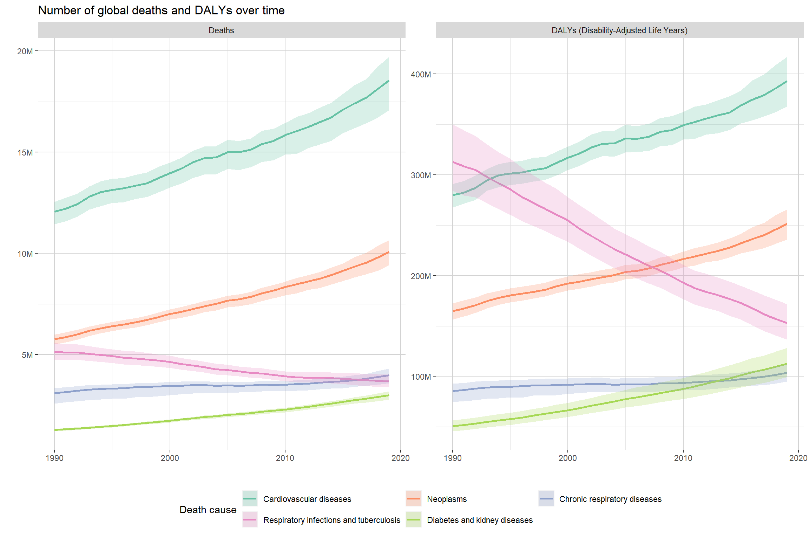
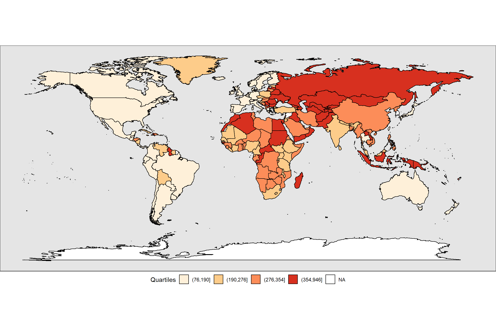
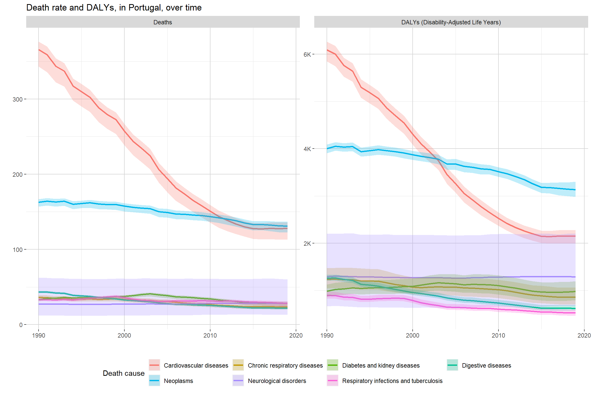
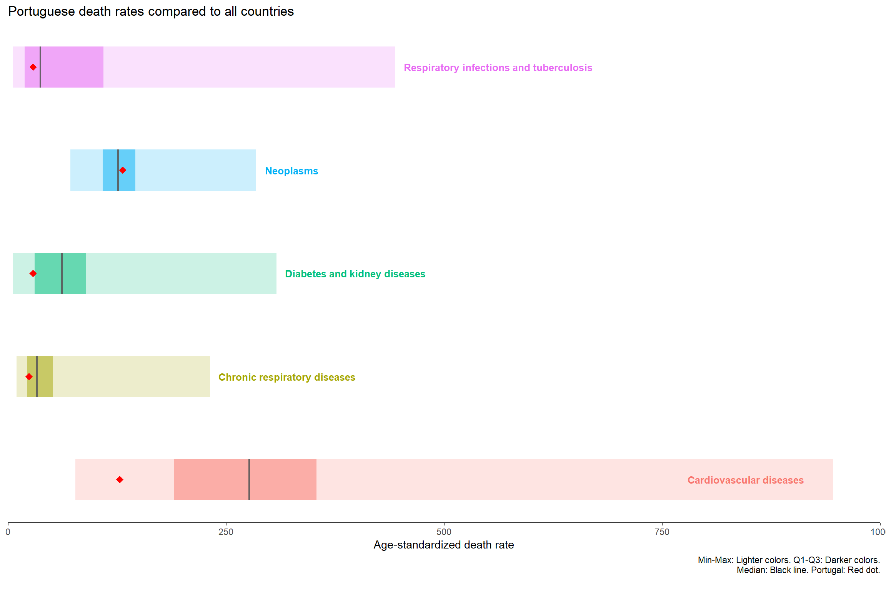

# Importing the necessary packages
library(rio) # Import function for multiple file formats
library(tidyverse) # Data wrangling and visualization
library(scales) # Number format functions
library(summarytools) # Easily explore data
library(kableExtra) # Display and format html tables
library(janitor) # Data examining and cleaning functions
library(plotly) # Interactive charts
library(RColorBrewer) # Choose color palettes for plots
library(directlabels) # Better labels for ggplot
library(DT) # Interactive tables
library(htmltools) # Helper functions to format DT tables
library(maps) # World maps Worldwide causes of death and disability from the Global Burden of Diseases study, 1990-2019: What changed over time and where does Portugal stand?
This report was made as part of the DATA class. The main goal was to deal with data cleaning and preparation issues, and carry out an exploratory data analysis. We were assigned the Global Burden of Disease database. We used the 2019 version, available at this link.
The theme that guided our work was Worldwide causes of death and disability from the Global Burden of Diseases study, 1990-2019: What changed over time and where does Portugal stand?
More specifically, our overview answers the questions:
What are the main causes of death worldwide?
How have these causes changed over time?
How are these causes distributed across countries?
How does Portual compare with other countries?
- Over time?
- Across causes of death?
First we load all the necessary packages:
Then we import the data:
# GBD data
# 3 files, with:
## Level 2 causes
## Metrics = Deaths, DALY
## Metric types = Number, Percent, Rate
## All countries and territories + global
## Age-standardized and All ages
## Sex = Both
## Years 1990 to 2019
# Names and ID were exported for grouping variables
data <- purrr::map_dfr(
.x = paste0("./raw_data/gbd",1:4,".csv"),
.f = ~ rio::import(file = .x,
encoding = "UTF-8")) %>% #without forcing encoding we get some errors (e.g. "Côte d'Ivoire")
as_tibble()
# Check internal structure of our dataset
str(data)tibble [1,057,800 x 16] (S3: tbl_df/tbl/data.frame)
$ measure_id : int [1:1057800] 1 1 1 1 1 1 1 1 1 1 ...
$ measure_name : chr [1:1057800] "Deaths" "Deaths" "Deaths" "Deaths" ...
$ location_id : int [1:1057800] 50 50 50 50 66 66 66 66 66 66 ...
$ location_name: chr [1:1057800] "Montenegro" "Montenegro" "Montenegro" "Montenegro" ...
$ sex_id : int [1:1057800] 3 3 3 3 3 3 3 3 3 3 ...
$ sex_name : chr [1:1057800] "Both" "Both" "Both" "Both" ...
$ age_id : int [1:1057800] 22 22 22 27 22 22 22 27 22 22 ...
$ age_name : chr [1:1057800] "All ages" "All ages" "All ages" "Age-standardized" ...
$ cause_id : int [1:1057800] 696 696 696 696 526 526 526 526 696 696 ...
$ cause_name : chr [1:1057800] "Unintentional injuries" "Unintentional injuries" "Unintentional injuries" "Unintentional injuries" ...
$ metric_id : int [1:1057800] 1 2 3 3 1 2 3 3 1 2 ...
$ metric_name : chr [1:1057800] "Number" "Percent" "Rate" "Rate" ...
$ year : int [1:1057800] 1990 1990 1990 1990 1990 1990 1990 1990 1990 1990 ...
$ val : num [1:1057800] 115.5454 0.0268 18.4657 19.1723 37.3597 ...
$ upper : num [1:1057800] 127.4077 0.0295 20.3615 21.1342 43.4111 ...
$ lower : num [1:1057800] 105.2088 0.0247 16.8138 17.4702 31.0454 ...Then we convert the grouping variables to factor:
# Converting all grouping and filter variables to factor
data <- data %>%
arrange(location_name, cause_name) %>% #Sorts to ensure countries and causes levels appear alphabetically
mutate(across(measure_id:metric_name, forcats::as_factor)) #converts relevant variables to factors
# Check if the conversion worked as expected
str(data)tibble [1,057,800 x 16] (S3: tbl_df/tbl/data.frame)
$ measure_id : Factor w/ 2 levels "1","2": 1 1 1 1 1 1 1 1 2 2 ...
$ measure_name : Factor w/ 2 levels "Deaths","DALYs (Disability-Adjusted Life Years)": 1 1 1 1 1 1 1 1 2 2 ...
$ location_id : Factor w/ 205 levels "1","6","7","8",..: 135 135 135 135 135 135 135 135 135 135 ...
$ location_name: Factor w/ 205 levels "Afghanistan",..: 1 1 1 1 1 1 1 1 1 1 ...
$ sex_id : Factor w/ 1 level "3": 1 1 1 1 1 1 1 1 1 1 ...
$ sex_name : Factor w/ 1 level "Both": 1 1 1 1 1 1 1 1 1 1 ...
$ age_id : Factor w/ 2 levels "22","27": 1 1 1 2 1 1 1 2 1 1 ...
$ age_name : Factor w/ 2 levels "All ages","Age-standardized": 1 1 1 2 1 1 1 2 1 1 ...
$ cause_id : Factor w/ 22 levels "344","386","410",..: 4 4 4 4 4 4 4 4 4 4 ...
$ cause_name : Factor w/ 22 levels "Cardiovascular diseases",..: 1 1 1 1 1 1 1 1 1 1 ...
$ metric_id : Factor w/ 3 levels "1","2","3": 1 2 3 3 1 2 3 3 1 2 ...
$ metric_name : Factor w/ 3 levels "Number","Percent",..: 1 2 3 3 1 2 3 3 1 2 ...
$ year : int [1:1057800] 1990 1990 1990 1990 1991 1991 1991 1991 1991 1991 ...
$ val : num [1:1057800] 4.49e+04 2.46e-01 3.93e+02 7.16e+02 4.55e+04 ...
$ upper : num [1:1057800] 52935.72 0.27 463.58 829.89 54080.09 ...
$ lower : num [1:1057800] 3.72e+04 2.22e-01 3.26e+02 6.09e+02 3.77e+04 ...Checking the levels for each grouping variable:
# Get the levels for all factor variables (excluding id variables)
# WARNING: if we use the maps library, we have to specify the package name below due to "map" being a duplicate function in purrr and maps libraries
lv <- purrr::map(data %>% select(where(is.factor) & ends_with("name")), levels)
# Template to print collapsible html sections and use kableExtra to print in a friendly way
template <- "<details><summary> %s </summary> %s </details>"
# Loop over variables and print the output of each in a separate section
for (i in 1:length(lv)) {
cat(sprintf(template, names(lv[i]), kbl(lv[i], col.names = "", escape = T)))
}measure_name
|
location_name
|
sex_name
|
age_name
|
cause_name
|
metric_name
|
We quickly summarize our data with summarytools package:
# Checking for missing values
data %>%
select(!ends_with("id")) %>% # Remove the id variables
summarytools::dfSummary(
plain.ascii = FALSE,
style = "grid") %>%
print(method = "render")Data Frame Summary
Dimensions: 1057800 x 10Duplicates: 0
| No | Variable | Stats / Values | Freqs (% of Valid) | Graph | Valid | Missing | |||||||||||||||||||||||||||||||||||||||||||||||||||||||
|---|---|---|---|---|---|---|---|---|---|---|---|---|---|---|---|---|---|---|---|---|---|---|---|---|---|---|---|---|---|---|---|---|---|---|---|---|---|---|---|---|---|---|---|---|---|---|---|---|---|---|---|---|---|---|---|---|---|---|---|---|---|
| 1 | measure_name [factor] |
|
|
 |
1057800 (100.0%) | 0 (0.0%) | |||||||||||||||||||||||||||||||||||||||||||||||||||||||
| 2 | location_name [factor] |
|
|
 |
1057800 (100.0%) | 0 (0.0%) | |||||||||||||||||||||||||||||||||||||||||||||||||||||||
| 3 | sex_name [factor] | 1. Both |
|
 |
1057800 (100.0%) | 0 (0.0%) | |||||||||||||||||||||||||||||||||||||||||||||||||||||||
| 4 | age_name [factor] |
|
|
 |
1057800 (100.0%) | 0 (0.0%) | |||||||||||||||||||||||||||||||||||||||||||||||||||||||
| 5 | cause_name [factor] |
|
|
 |
1057800 (100.0%) | 0 (0.0%) | |||||||||||||||||||||||||||||||||||||||||||||||||||||||
| 6 | metric_name [factor] |
|
|
 |
1057800 (100.0%) | 0 (0.0%) | |||||||||||||||||||||||||||||||||||||||||||||||||||||||
| 7 | year [integer] |
|
30 distinct values |  |
1057800 (100.0%) | 0 (0.0%) | |||||||||||||||||||||||||||||||||||||||||||||||||||||||
| 8 | val [numeric] |
|
1057800 distinct values |  |
1057800 (100.0%) | 0 (0.0%) | |||||||||||||||||||||||||||||||||||||||||||||||||||||||
| 9 | upper [numeric] |
|
1057800 distinct values |  |
1057800 (100.0%) | 0 (0.0%) | |||||||||||||||||||||||||||||||||||||||||||||||||||||||
| 10 | lower [numeric] |
|
1057800 distinct values |  |
1057800 (100.0%) | 0 (0.0%) |
Generated by summarytools 1.0.1 (R version 4.1.3)
2022-10-11
No duplicates were detected.
No missing values were detected.
There are more rows with DALYs than Deaths, meaning there is some combination of variables for which no Deaths data is available.
There are more rows with All ages than Age-standardized, meaning there is some combination of variables for which no Age-standardized data is available.
There are more rows with Rate than other metrics, meaning there is some combination of variables for which no Number and Percent data is available.
Only min and max are relevant for the year variable.
8-10. val, upper and lower are not interpretable, because we are mixing metrics (number, percent and rates) and measures (deaths and DALYs).
We need to check which combination of measures, ages and metrics are available:
# 3-way Crosstab
janitor::tabyl(data, measure_name, age_name, metric_name)$Number
measure_name All ages Age-standardized
Deaths 129150 0
DALYs (Disability-Adjusted Life Years) 135300 0
$Percent
measure_name All ages Age-standardized
Deaths 129150 0
DALYs (Disability-Adjusted Life Years) 135300 0
$Rate
measure_name All ages Age-standardized
Deaths 129150 129150
DALYs (Disability-Adjusted Life Years) 135300 135300We see that Age-Standardized’* values are only available for the Rate metric.
We see that there are more rows of DALYs than deaths, meaning that there are causes for which no deaths data are available.
Checking for causes which have no values for the Deaths metric:
# Check cause * metric combinations with no data available, for each measure:
map_dfr(janitor::tabyl(data, measure_name, metric_name, cause_name),
~ as_tibble(.x), .id = "id") %>%
filter(if_any(where(is.numeric), ~ .x == 0))# A tibble: 1 x 5
id measure_name Number Percent Rate
<chr> <fct> <dbl> <dbl> <dbl>
1 Sense organ diseases Deaths 0 0 0We see that the cause of death for which no data is available is Sense organ diseases.
In conclusion:
- Age-standardized data is only available for Rates
- Deaths data is not available for Sense organ diseases, which may warrant precautions in some types of analyses (that will not be carried out in this report)
In this section we explore how death causes have changed globally over time, and how are they distributed across countries.
Firstly, we identify the causes of death with highest magnitude in 2019, to focus on those in our subsequent analyses:
data %>%
filter(location_name=="Global",
year == 2019,
measure_name=="Deaths",
metric_name=="Rate") %>% # Apply necessary filters to ensure logical consistency
arrange(desc(val)) %>% # Sort from highest to lowest
select(cause_name, val, age_name) %>%
pivot_wider(names_from = "age_name", values_from="val") # Convert age_name to wide format to improve readability# A tibble: 21 x 3
cause_name `All ages` `Age-standardized`
<fct> <dbl> <dbl>
1 Cardiovascular diseases 240. 240.
2 Neoplasms 130. 125.
3 Chronic respiratory diseases 51.4 51.3
4 Respiratory infections and tuberculosis 47.6 49.1
5 Diabetes and kidney diseases 38.6 37.9
6 Digestive diseases 33.1 32.1
7 Maternal and neonatal disorders 26.9 31.5
8 Neurological disorders 28.7 30.7
9 Enteric infections 22.6 23.9
10 Unintentional injuries 22.9 23.1
# ... with 11 more rowsWe selected the 5 causes with the highest magnitude:
# Causes with highest death rate in 2019, globally
main_causes <- c("Cardiovascular diseases",
"Neoplasms",
"Chronic respiratory diseases",
"Respiratory infections and tuberculosis",
"Diabetes and kidney diseases") %>%
as_factor()Secondly, we explored how the global number of deaths has changed over time:
# Create a color scheme to use throughout the analysis
my_colors <- RColorBrewer::brewer.pal(length(main_causes),
name = "Set2")
names(my_colors) <- main_causes
# Plotting global deaths and DALYs over time
data %>%
filter(cause_name %in% main_causes,
location_name=="Global",
age_name=="All ages",
metric_name=="Number") %>%
ggplot() +
geom_line(aes(x = year, y = val, color = cause_name), size=1) +
geom_ribbon(aes(x = year, ymin = lower, ymax = upper, fill = cause_name), alpha=0.25) +
labs(title = "Number of global deaths and DALYs over time",
x = "", y = "", color = "Death cause", fill="Death cause") + # Apply custom names to each plot component
scale_y_continuous(labels = scales::label_number(scale_cut = cut_short_scale()))+ # Display in millions
scale_color_manual(values = my_colors) + # Apply custom colors
scale_fill_manual(values = my_colors) + # Apply custom colors
theme(legend.position = "bottom",
panel.background = element_rect(fill = NA),
panel.grid.major = element_line(colour = "lightgray"),
panel.grid.minor = element_line(colour = "grey90")) +
guides(fill = guide_legend(nrow = 2, byrow = TRUE),
color = guide_legend(nrow = 2, byrow = TRUE)) +
facet_wrap(~measure_name, scales = "free_y") # Show separate plots for Deahts and DALYs
The pattern for deaths and DALYs over time is similar for most causes.
- It’s important to note that there is some correlation between these two measures, as some deaths are included in the DALYs measure (premature deaths), so in causes for which disease burden is mostly due to deaths, we expect a similar pattern.
- For Respiratory infections and tuberculosis, the pattern for deaths and DALYs is very different, showing that the majority of disease burden is due to disability instead of deaths.
- We also see that the DALYs for Diabetes and kidney diseases have been increasing at a quicker pace than for Chronic respiratory infections.
Then we assessed the Proportion of deaths by each of the studied causes:
# Add the extra color needed for "Other" causes of death
my_colors2 <- c(my_colors, "Other"="gray")
# Plot proportion of deaths by cause, over time
prop_plot <- data %>%
filter(location_name=="Global",
measure_name=="Deaths",
age_name=="All ages",
metric_name=="Percent") %>%
mutate(causes_group = ifelse(as.character(cause_name) %in% main_causes,
as.character(cause_name),
"Other")) %>% # Create a variable with 5 main causes + Other
group_by(year, causes_group) %>%
summarise(val = sum(val)) %>% # Collapse all remaining causes into "Other"
mutate(causes_group=fct_rev(fct_relevel(causes_group,"Other", after = Inf))) %>%
ggplot()+
geom_col(aes(x = year, y = val, fill=causes_group,text = paste("Proportion:", scales::percent(val,accuracy = 0.1))), position = position_stack()) +
scale_y_continuous(labels = scales::percent_format(), breaks = seq(.1,1,.1), expand = c(0,0), sec.axis =dup_axis())+
scale_x_continuous(expand = c(0,0),breaks = seq(1990,2018,2)) +
scale_fill_manual(values = my_colors2) +
labs (title = "Proportion of deaths by cause",
x="", y="", fill="Death cause") +
theme(legend.position = "bottom")
ggplotly(prop_plot, tooltip = c("x","text","causes_group"))- Analyzing the proportion of global deaths by cause, we see that the 5 studied causes were responsible for just under 60% of deaths in 1990, while causing 70% of deaths in 2019.
- Respiratory infections and tuberculosis are the only cause where we see a clearly decreasing pattern.
- Neoplasms appear to show the highest relative increase over time.
Thirdly, we assessed the density estimation of death rates in all countries and territories, over time:

Code to generate the GIF above
#NB: this code was run on a separate file, and the output imported to the markdown report
# Imports
library(gganimate) # Animated plots
library(magick) # Image processing
causes_list <- c("Cardiovascular diseases",
"Chronic respiratory diseases",
"Neoplasms",
"Respiratory infections and tuberculosis",
"Diabetes and kidney diseases")
# Parameters:
p_measure = "Deaths"
p_metric = "Rate"
p_age = "Age-standardized"
#Helper set, to include only global deaths for the selected parameters
global_data <- data %>%
filter(location_name=="Global",
measure_name==p_measure,
metric_name==p_metric,
age_name==p_age) %>%
filter(cause_name %in% causes_list) %>%
ungroup() %>%
rename(year_global = year,
val_global = val,
upper_global = upper,
lower_global = lower,
cause_name = cause_name)
#get the causes_list ordered (desc) by magnitude of global death rate
lvl_2019 <- global_data %>%
filter(year_global==2019) %>%
arrange(-val_global) %>%
select(cause_name) %>%
map(as.character) %>%
.[[1]] %>%
str_wrap(width = 22) #!!
#Choose a color palette for comparability
my_colors <- RColorBrewer::brewer.pal(length(lvl_2019), name = "Set2")
names(my_colors) <- lvl_2019
#Helper dataset, for labeling purposes
my_labs <- tibble(data %>%
group_by(cause_name, year) %>%
filter(metric_name==p_metric,
measure_name==p_measure,
age_name==p_age,
cause_name %in% causes_list) %>%
filter(val==max(val)) %>%
group_by(cause_name) %>%
filter(val==(max(val))) %>%
ungroup() %>%
select(val, cause_name)) %>%
mutate(cause_name = str_wrap(cause_name, width = 22)) %>% #!!
left_join(tibble(lvl_2019) %>% rowid_to_column(), by = c("cause_name"="lvl_2019")) %>%
mutate(id2 = max(rowid) - rowid + 1) %>%
mutate(val = 100*id2 + 400)
#Anim1: boxplot + violin plot of death rate by country
# sort causes by desc global death rate in 2019
anim1 <- data %>%
filter(location_name!="Global",
measure_name==p_measure,
metric_name==p_metric,
age_name==p_age) %>%
filter(cause_name %in% causes_list) %>%
mutate(cause_name = str_wrap(cause_name, width = 22)) %>% #!!
mutate(cause_name = fct_relevel(cause_name, rev(lvl_2019))) %>% #sort causes
ggplot(aes(y=val, x = cause_name)) +
geom_violin(aes(fill=cause_name), trim = T, scale = "area")+
geom_boxplot(width = 0.1, alpha=0.4)+
geom_text(data = my_labs, aes(label = cause_name, x = id2, y = val, color = cause_name)) +
coord_flip() +
theme(legend.position = "none",
panel.background = element_rect(fill = NA),
panel.grid.major.x = element_line(colour = "lightgray"),
panel.grid.minor.x = element_line(colour = "grey90"),
plot.title = element_text(hjust = 0),
plot.subtitle = element_text(hjust = 0),
axis.text.y = element_blank(),
axis.ticks.y = element_blank()) +
scale_fill_manual(values = my_colors) +
scale_color_manual(values = my_colors) +
labs(title = "Distribution of death rate by country across main death causes",
subtitle = 'Year: {closest_state}',
x = "",
y = "Death Rate") +
transition_states(
year,
transition_length = 2,
state_length = 1) +
enter_fade() +
exit_shrink() +
ease_aes('sine-in-out')
# Time series with global death rates for the selected causes
anim2 <- global_data %>%
mutate(cause_name = str_wrap(cause_name, width = 22)) %>% #!!
mutate(cause_name = fct_relevel(cause_name, rev(lvl_2019))) %>%
ggplot(aes(y=val_global,
x = year_global,
color = reorder(cause_name, desc(cause_name)),
shape = reorder(cause_name, desc(cause_name)))) +
scale_color_manual(values = my_colors) +
geom_line(size = 1.4)+
geom_point(size = 3) +
theme(legend.position = "none",
panel.background = element_rect(fill = NA),
panel.grid.major.x = element_line(colour = "lightgray"),
panel.grid.minor.x = element_line(colour = "grey90")) +
labs(title = "Global deaths over time",
subtitle = 'Year: {frame_along}',
x = "",
y = "Death Rate",
color = "", shape = "") +
transition_reveal(year_global) +
enter_fade() +
exit_shrink() +
ease_aes('sine-in-out')
#set a number of frames similar in both anims
anim1_gif <- animate(anim1,
nframes = 4 * length(unique(global_data$year_global)),
width = 1400, height = 800, unit = "px", res = 200,
end_pause = 20,
renderer = magick_renderer())
anim_save("anim1.gif", anim1_gif)
anim2_gif <- animate(anim2,
nframes = 4 * length(unique(global_data$year_global)),
width = 1400, height = 800, unit = "px", res = 200,
end_pause = 20,
renderer = magick_renderer())
anim_save("anim2.gif", anim2_gif)
#for some reason the last frame of anim2 is not as it should be
# We need to manually correct it
anim2_gif[100] <- anim2_gif[99]
for (j in 100:120) {
anim2_gif[j] <- anim2_gif[99]
}
#Combine both plots in a single GIF
i=1
combined <- image_append(c(anim1_gif[i], anim2_gif[i]), stack = TRUE)
new_gif <- image_flatten(combined)
for (i in 2:120) {
combined <- magick::image_append(c(anim1_gif[i], anim2_gif[i]), stack = TRUE)
new_gif <- c(new_gif, combined)
}
# Warning: may take a long time to generate
image_write(new_gif, format="gif", path="plot2.gif")From the plots, we can see that:
- Death rates are consistently decreasing for all analyzed causes, except Diabetes and kidney diseases.
- Chronic respiratory diseases overtake Respiratory infections and tuberculosis as the 3rd leading cause of death in recent years.
- We see the largest absolute decrease in death rates for Cardiovascular diseases.
- The studied causes vary widely across countries, with outliers at the right tail of the density function (as expected, because it is impossible to have less than zero deaths). In 2019 and skewness was over 1 for all the studied causes (table below), and from the chart we can see that the years immediately before had even larger variation.
- Not all causes appear to have the same variation across countries: Cardiovascular diseases show the largest absolute variation (Std. Dev = 141.89 for 2019), but Respiratory infections and tuberculosis have the highest coefficient of variation (CV = 1.06 for 2019) and skewness (2.52) (table below).
- Neoplasms, despite having a few outliers over the years, have the most symmetric pattern from the studied causes.
We calculated descriptive statistics for the year 2019:
data %>%
filter(location_name!="Global", # By country. Must exclude global values.
measure_name=="Deaths",
year==2019, # For the latest year only
age_name=="Age-standardized",
metric_name=="Rate",
cause_name %in% main_causes) %>%
group_by(cause_name) %>%
summarytools::descr(val, style = "rmarkdown") %>% # Descriptive statistics
print(method="render")Descriptive Statistics
val by cause_name
N: 204| Cardiovascul ar diseases |
Chronic respiratory diseases |
Diabetes and kidney diseases |
Neoplasms | Respiratory infections and tuberculosis |
|
|---|---|---|---|---|---|
| Mean | 292.50 | 42.12 | 68.58 | 130.16 | 71.05 |
| Std.Dev | 141.89 | 32.12 | 50.66 | 31.88 | 75.11 |
| Min | 77.01 | 9.32 | 5.75 | 71.26 | 5.61 |
| Q1 | 189.09 | 21.14 | 29.87 | 108.47 | 18.92 |
| Median | 276.26 | 32.60 | 61.81 | 126.12 | 36.94 |
| Q3 | 354.27 | 51.51 | 89.92 | 145.89 | 109.52 |
| Max | 945.97 | 231.20 | 307.50 | 284.33 | 443.48 |
| MAD | 118.56 | 19.50 | 44.48 | 28.53 | 34.26 |
| IQR | 163.91 | 30.23 | 59.49 | 37.38 | 90.20 |
| CV | 0.49 | 0.76 | 0.74 | 0.24 | 1.06 |
| Skewness | 1.15 | 2.52 | 1.52 | 1.01 | 1.79 |
| SE.Skewness | 0.17 | 0.17 | 0.17 | 0.17 | 0.17 |
| Kurtosis | 2.27 | 9.05 | 3.30 | 2.35 | 3.70 |
| N.Valid | 204 | 204 | 204 | 204 | 204 |
| Pct.Valid | 100.00 | 100.00 | 100.00 | 100.00 | 100.00 |
Generated by summarytools 1.0.1 (R version 4.1.3)
2022-10-11
We plotted a map for the main global death cause (Cardiovascular diseases) in 2019, to visually inspect for patterns in countries with similar characteristics:
# Preparing the map object with our data
global_map <- map_data("world") %>% # get world map data
left_join(data %>% #
filter(cause_name=="Cardiovascular diseases",
measure_name=="Deaths",
year==2019,
age_name=="Age-standardized",
metric_name=="Rate") %>%
mutate(location_name = as.character(location_name)) %>% # Convert to character to match the two datasets
# We need to manually change the name of some countries due to differences in GPD and maps library data
mutate(location_name = case_when(
location_name == "United States of America" ~ "USA",
location_name == "United Kingdom" ~ "UK",
location_name == "Russian Federation" ~ "Russia",
location_name == "Czechia" ~ "Czech Republic",
location_name == "Republic of Korea" ~ "",
location_name == "Iran (Islamic Republic of)" ~ "Iran",
location_name == "Venezuela (Bolivarian Republic of)" ~ "Venezuela",
location_name == "Bolivia (Plurinational State of)" ~ "Bolivia",
location_name == "United Republic of Tanzania" ~ "Tanzania",
location_name == "Côte d'Ivoire" ~ "Ivory Coast",
location_name == "Congo" ~ "Republic of Congo",
location_name == "Viet Nam" ~ "Vietnam",
location_name == "Lao People's Democratic Republic" ~ "Laos",
location_name == "Taiwan (Province of China)" ~ "Taiwan",
location_name == "Democratic People's Republic of Korea" ~ "North Korea",
location_name == "Republic of Korea" ~ "South Korea",
TRUE ~ location_name)) %>%
select(location_name, val),
by = c("region"="location_name")) # Join by location name
# Calculate Min, Q1, Median, Q3 and Max to use as cutoffs in the map
cutoffs <- data %>%
filter(location_name!="Global", # By country. Must exclude global values.
measure_name=="Deaths",
year==2019, # For the latest year only
age_name=="Age-standardized",
metric_name=="Rate",
cause_name == "Cardiovascular diseases") %>%
group_by(cause_name) %>%
summarise(cutoff = quantile(val, c(0,0.25,0.5,0.75,1)),
q = c("min","q1","median","q3","max")) %>%
mutate(cutoff = ifelse(q=="min", cutoff - 1, cutoff)) # Without this correction the lowest country doesn't appear filled
# World map
ggplot(global_map) +
geom_polygon(aes(x=long, y = lat, group = group, fill=cut(val, cutoffs$cutoff)), color="black", alpha=1) +
scale_fill_brewer(palette = "OrRd", na.value = "white") +
labs(fill = "Quartiles") +
coord_fixed() + # Keep map aspect ratio
theme_void() +
theme(legend.position = "bottom",
panel.background = element_rect(fill="gray90"))
We see some identifiable patterns:
- European (except Eastern European), North and South American countries are in the first quartile of cardiovascular death rates (age-standardized).
- Eastern European, Central Asian and some North African and Southeast Asian island countries are in the fourth quartile.
- Southeast Asian mainland countries and most of the African continent are in the second and third quartiles.
In this section we analyze the main causes of death for Portugal, comparing with global values. We also do a longitudinal analysis across the entire study period.
First, we select data for Portugal only, and store it in a new object:
# Selecting only PT data, and storing in a new object
pt <- data %>%
filter(location_name=="Portugal")Then, we calculate absolute and relative change for Deaths, for all ages (Number and Percent), and age-standardized (Rates):
# Calculate necessary variables for PT
pt_variations <- pt %>%
filter(measure_name=="Deaths",
year %in% c(1990, 2019)) %>%
select(-upper, -lower) %>%
pivot_wider(names_from = year, values_from = val) %>% # Move the years to columns, to be easier to compute other variables
group_by(measure_name, age_name, cause_name) %>%
mutate(abs_change = `2019` - `1990`, # Calculate absolute change
rel_change = abs_change / `1990`) %>% # Calculate relative change
ungroup() # Best practices, to avoid problems later
# Calculate necessary variables globally
global_variations <- data %>%
filter(location_name=="Global") %>%
filter(measure_name=="Deaths",
year %in% c(1990, 2019)) %>%
select(-upper, -lower) %>%
pivot_wider(names_from = year, values_from = val) %>% # Move the years to columns, to be easier to compute other variables
group_by(measure_name, age_name, cause_name) %>%
mutate(abs_change = `2019` - `1990`, # Calculate absolute change
rel_change = abs_change / `1990`) %>% # Calculate relative change
select(cause_name, metric_name, measure_name, age_name, `1990`, `2019`, abs_change, rel_change) %>%
rename(global_1990 = `1990`,
global_2019 = `2019`,
global_abs_change = abs_change,
global_rel_change = rel_change) %>% # Change names to avoid compatibility problems when joining with PT data
ungroup() # Best practices, to avoid problems laterAnalyzing the changes in number of deaths:
# Helper object, to manually configure table header rows
header_helper <- htmltools::withTags(table(
class="display",
thead(
tr(
th(rowspan = 2, "Causa"),
th(colspan = 4, class="text-center", "Portugal"),
th(colspan = 4, class="text-center", "Global"),
),
tr(lapply(rep(c("1990","2019",paste("Abs.",as.character("\u0394")),paste("Rel.",as.character("\u0394"))),2),th))
)))
# Metric being analyzed
sel_metric <- "Number"
# Table with absolute and relative changes in number of deaths
pt_variations %>%
filter(metric_name==sel_metric) %>%
select(cause_name, `1990`, `2019`, abs_change, rel_change) %>%
left_join(global_variations %>%
filter(metric_name==sel_metric) %>%
ungroup() %>%
select(cause_name, global_1990, global_2019, global_abs_change, global_rel_change)) %>% # Join global and PT data
arrange(abs_change) %>%
DT::datatable(container = header_helper, rownames = F, escape = FALSE) %>%
formatRound(c("1990","2019","abs_change", "global_1990","global_2019","global_abs_change"), digits = 0, mark = "") %>%
formatPercentage(c("rel_change","global_rel_change"), digits = 1, mark = "") From the table we see that in Portugal:
- The causes with the largest absolute reduction in number of deaths were Cardiovascular diseases, Transport injuries and Maternal and neonatal disorders
- The causes with the largest absolute increase in the number of deaths were Neoplasms, Neurologic disorders and Respiratory infections and tuberculosis.
- The causes with the largest relative reduction in number of deaths were Maternal and neonatal disorders, Transport injuries and Self-harm and interpersonal violence (Excluding causes with <500 deaths in 1990).
- The causes with the largest relative increase in the number of deaths were Neurological disorders, Other non-communicable diseases and Respiratory infections and tuberculosis (Excluding causes with <500 deaths in 1990).
Comparing with global rates of change, we see that:
- While deaths due to Transport injuries increased 7.5% globally, in Portugal there was a 70.4% decrease in the number of deaths.
- While deaths due to Cardiovascular diseases increased 53.8% globally, in Portugal there was a 18.5% decrease in the number of deaths.
- Deaths by Respiratory infections and tuberculosis increased in Portugal by more than 100%, while decreaing globally by 28.3%
However, as we are analyzing numbers, we cannot know how much of this variation is due to population ageing
Analyzing rates, we can control for the effects of population size and age structure:
# Metric being analyzed
sel_metric <- "Rate"
# Table with absolute and relative changes in proportion of deaths
pt_variations %>%
filter(metric_name==sel_metric,
age_name=="Age-standardized") %>% # Don't forget to filter for age-standardized data!
select(cause_name, `1990`, `2019`, abs_change, rel_change) %>%
left_join(global_variations %>%
filter(metric_name==sel_metric,
age_name=="Age-standardized") %>%# Don't forget to filter for age-standardized data!
ungroup() %>%
select(cause_name, global_1990, global_2019, global_abs_change, global_rel_change)) %>% # Join global and PT data
arrange(abs_change) %>%
DT::datatable(container = header_helper, rownames = F) %>%
formatRound(c("1990","2019","abs_change", "global_1990","global_2019","global_abs_change"), digits = 1, mark = "") %>%
formatPercentage(c("rel_change","global_rel_change"), digits = 1, mark = "") From the table above we can see that:
- In Portugal, Neoplasms are the main cause of death, while globally cardiovascular diseases have the highest age-standardized death rates
- In Portugal, Neurological disorders are one of the top 5 leading causes of death, whilst being the 8th gloablly
- Besides the causes of death already highlighted in the tables above, we see that Digestive diseases, Unintentional injuries and Self-harm and interpersonal violence have seen large reductions in death rates in Portugal.
- It is important to note that only 5 causes show an increase in death rates in Portugal between 1990 and 2019, and none of those is of particularly high magnitude.
- Based on this observations, we can infer that most of the increases seen in the first table for PT are likely due to population ageing.
Plotting the change over time of the main death causes in Portugal:
#Causes with highest death rate in 2019, in PT
pt_main_causes <- c("Neoplasms",
"Cardiovascular diseases",
"Respiratory infections and tuberculosis",
"Diabetes and kidney diseases",
"Neurological disorders",
"Chronic respiratory diseases",
"Digestive diseases") %>%
as_factor()
pt %>%
filter(age_name=="Age-standardized",
metric_name=="Rate",
cause_name %in% pt_main_causes) %>%
ggplot() +
geom_line(aes(x = year, y = val, color = cause_name), size=1) +
geom_ribbon(aes(x = year, ymin = lower, ymax = upper, fill = cause_name), alpha=0.25) +
labs(title = "Death rate and DALYs, in Portugal, over time",
x = "", y = "", color = "Death cause", fill="Death cause") + # Apply custom names to each plot component
scale_y_continuous(labels = scales::label_number(scale_cut = cut_short_scale()))+ # Display in thousands
theme(legend.position = "bottom",
panel.background = element_rect(fill = NA),
panel.grid.major = element_line(colour = "lightgray"),
panel.grid.minor = element_line(colour = "grey90")) +
guides(fill = guide_legend(nrow = 2, byrow = TRUE),
color = guide_legend(nrow = 2, byrow = TRUE)) +
facet_wrap(~measure_name, scales = "free_y") # Show separate plots for Deaths and DALYs
We check how age-standardized death rates in Portugal compare with other countries, for the main studied causes of death:
# Helper object to use in the plot
pt_stats <- pt %>%
filter(measure_name=="Deaths",
year==2019,
age_name=="Age-standardized",
metric_name=="Rate",
cause_name %in% main_causes) %>%
mutate(id = row_number())
# Create the plot
data %>%
filter(location_name!="Global", # By country. Must exclude global values.
measure_name=="Deaths",
year==2019, # For the latest year only
age_name=="Age-standardized",
metric_name=="Rate",
cause_name %in% main_causes) %>%
group_by(cause_name) %>%
summarise(stats = quantile(val, c(0,0.25,0.5,0.75,1)),
q = c("min","q1","median","q3","max")) %>%
pivot_wider(names_from = q, values_from = stats) %>%
ungroup() %>%
mutate(id = row_number()) %>%
ggplot(aes(group = cause_name)) +
geom_rect(aes(xmin = min, xmax = max, ymin = id-0.2, ymax = id+0.2, fill = cause_name), alpha = 0.2) +
geom_rect(aes(xmin = q1, xmax = q3, ymin = id-0.2, ymax = id+0.2, fill = cause_name), alpha = 0.5) +
geom_rect(aes(xmin = median - 1, xmax = median + 1, ymin = id-0.2, ymax = id+0.2), alpha = 0.9) +
geom_point(data = pt_stats, mapping = aes(x = val, y = id), color = "red", shape = 18, size = 3) +
geom_dl(aes(label = cause_name, x = max, y = id, color = cause_name), method = list(dl.trans(x = x + c(-5, rep(0.3,4))),fontface = "bold", "last.points", cex = 0.8)) +
labs(title = "Portuguese death rates compared to all countries",
caption = "Min-Max: Lighter colors. Q1-Q3: Darker colors.\nMedian: Black line. Portugal: Red dot.\n",
y="", x = "Age-standardized death rate") +
scale_x_continuous(expand = c(0,0), limits = c(0,1000)) +
theme(legend.position = "none",
axis.text.y=element_blank(),
axis.ticks.y = element_blank(),
axis.title.y=element_blank(),
axis.line.x = element_line(colour = "black"),
panel.background=element_blank())
We see that for the studied causes of death:
- Portuguese age-standardized rates in 2019 are below the median for all causes, except Neoplasms.
- For Cardiovascular diseases, the leading cause of death globally, Portugal is in the quartile of countries with lowest age-standardized death rates.
Global Burden of Disease Collaborative Network. Global Burden of Disease Study 2019 (GBD 2019) Results. Seattle, United States: Institute for Health Metrics and Evaluation (IHME), 2020. Available from https://vizhub.healthdata.org/gbd-results/.